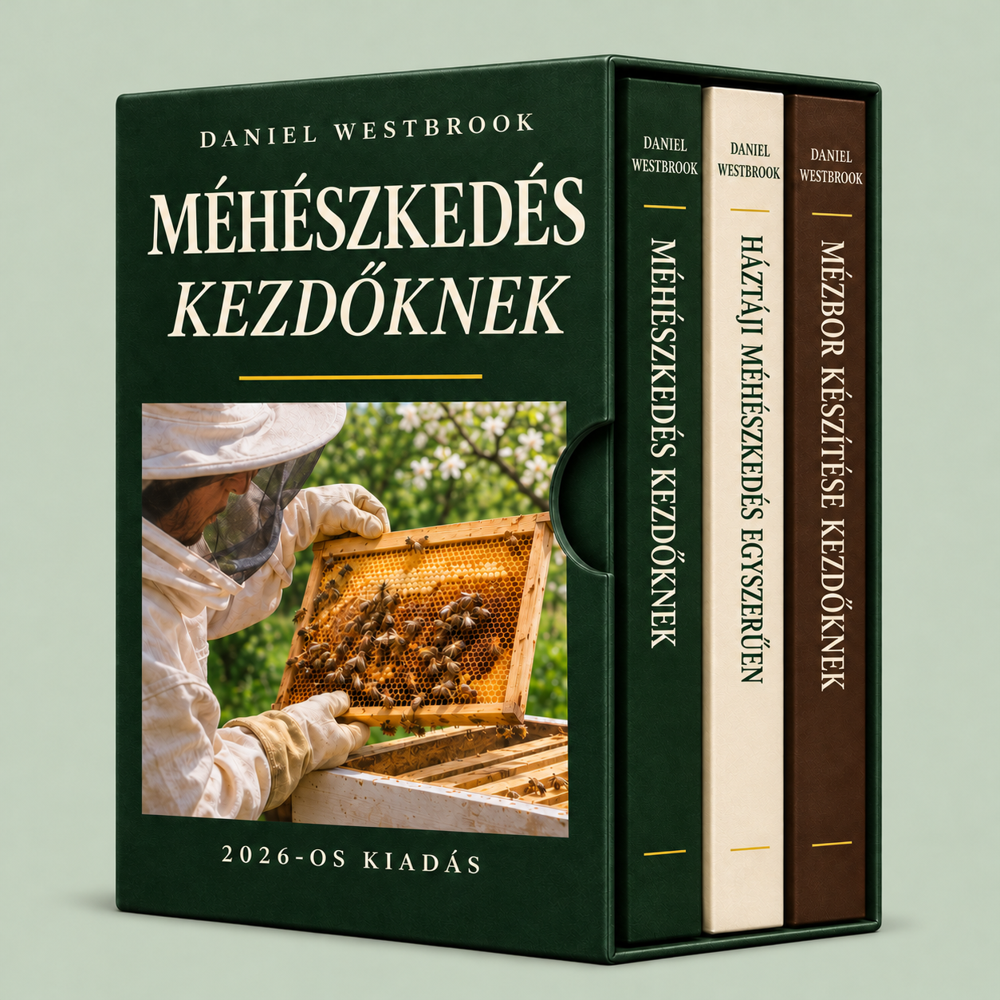

DANIEL WESTBROOK GYŰJTEMÉNYE
Az első méhcsaládtól a saját mézedig.

Megérteni. Megfigyelni. Fejlődni.
TAGI FELÜLETED
Kalandod
Kalandod
a méhekkel
itt kezdődik.
Örülünk, hogy itt vagy. Fedezd fel a méhek világát olyan tudással, amely az első lépéstől elkísér.
SZEMÉLYES KÖNYVTÁRAD
Belépés a tagi felületre
Értsd meg az alapokat. Méhészkedj a saját kertedben. Ismerd meg a mézborkészítést.
Olvasd a három könyvet online, vagy töltsd le őket PDF-ként.
- 3
- Könyv
- 180
- oldalnyi tudás
- Saját tempó
- Kezdőknek